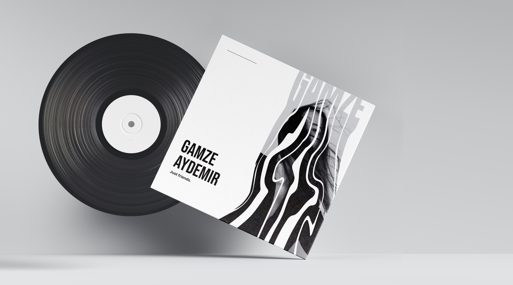
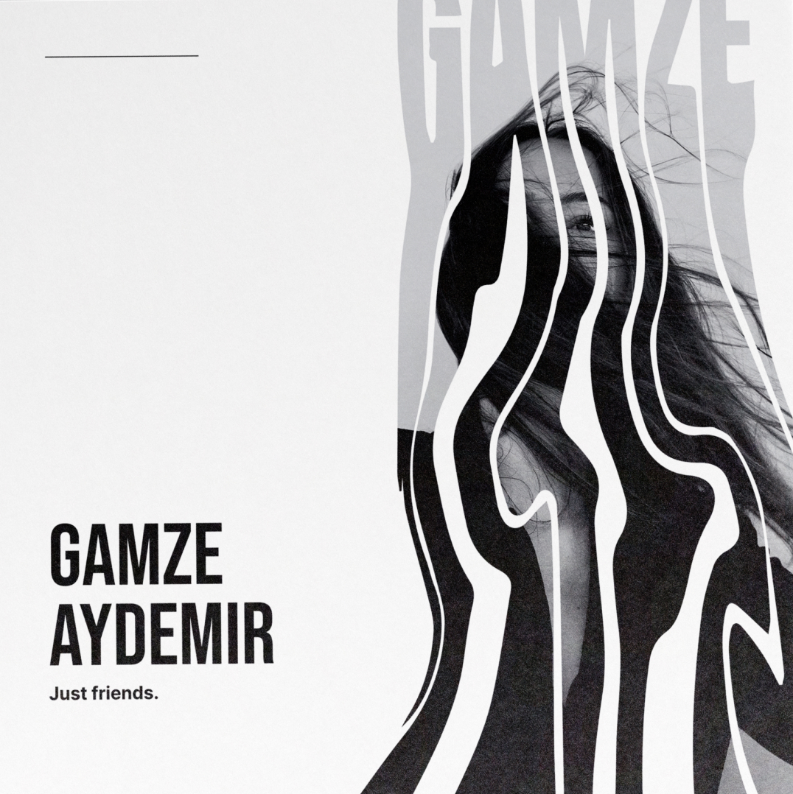
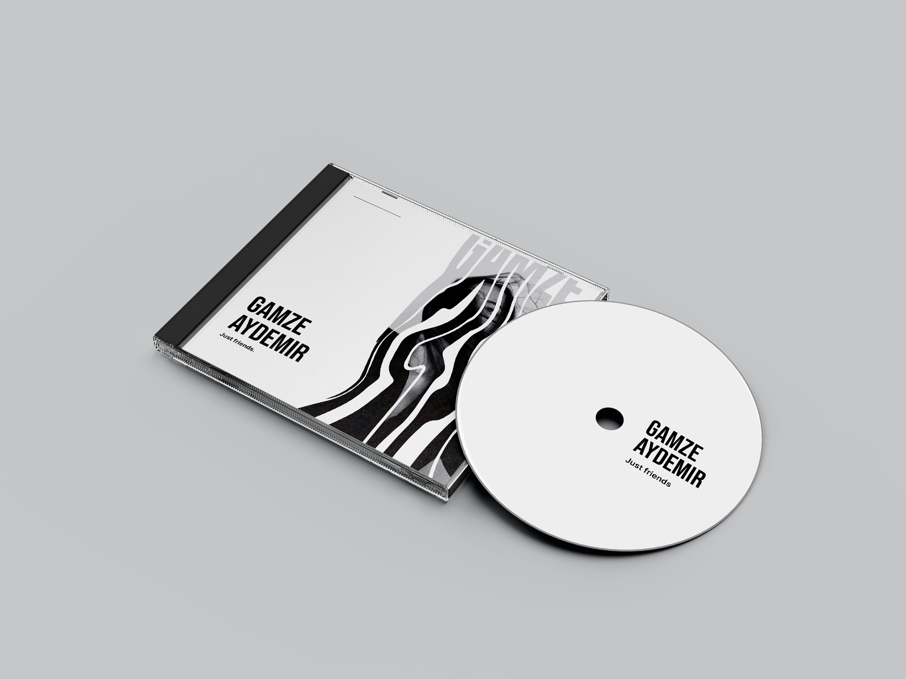

-
Logiciels
Photoshop
Illustrator
Gamze Aydemir
Le projet demandé était de créer une cover pour un album de musique intitulé "Gamze Aydemir".
L'objectif était de représenter l'atmosphère mélancolique et poétique de l'album, tout en créant une image
visuelle élégante et intemporelle.

Le concept
Le choix de l'album "Gamze Aydemir" a été motivé par l'envie de créer une cover pour un projet de musique
intemporelle,
qui a une ambiance mélancolique mais aussi romantique. Les chansons de Gamze Aydemir sont souvent douces et
pleines d'émotions,
ce qui a inspiré la création d'une cover qui évoque ces sensations.
La cover a été conçue en noir et blanc pour refléter l'ambiance nostalgique et romantique de l'album. Les traces
d'eau qui
s'écoulent sur la droite de la cover évoquent l'idée de la fluidité et de l'écoulement du temps qui passe. L'image
d'une femme en
noir et blanc à l'intérieur de ces traces d'eau ajoute une dimension poétique et énigmatique à la cover.
L'image de la femme a été choisie pour représenter la poésie et la douceur de l'album, et a été
travaillée en noir
et blanc pour créer un effet classique et élégant.

Le titre de l'album "Gamze Aydemir" est écrit en lettres majuscules blanches, en contraste avec le fond noir de
la cover.
Le texte "Just friends." est écrit en noir en haut de la cover, créant un équilibre visuel et ajoutant un élément
de mystère
à la cover.
Les couleurs
Le choix du noir et blanc pour la cover reflète l'ambiance mélancolique et nostalgique de l'album.
Le contraste entre les deux couleurs ajoute de la profondeur et de la texture à l'image, tout en créant une
atmosphère intemporelle.
